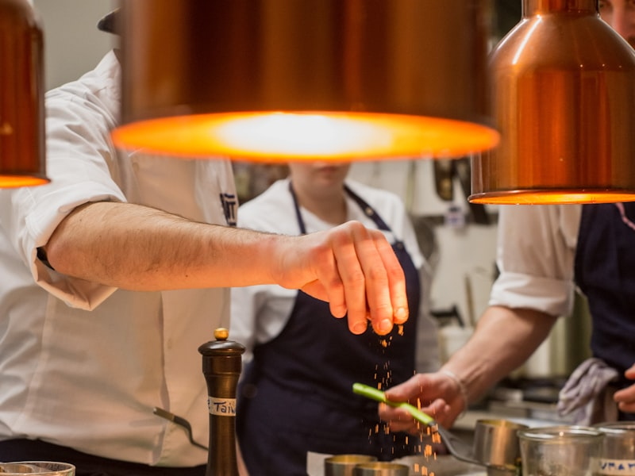

Trente-huit ans de patience
Quand on arrive chez Émile Renard, ce n'est pas une exploitation industrielle qui nous accueille, mais un patchwork de petites parcelles bordées de haies vives. Ici, on ne compte pas en hectares mais en variétés : crosnes, panais, topinambours, betteraves chioggia, choux-raves oubliés. Émile a repris la ferme familiale en 1987 et a fait, dès le départ, un choix à contre-courant — privilégier la diversité plutôt que le rendement.
« On m'a pris pour un fou, à l'époque », raconte-t-il en riant. « Tout le monde arrachait les vieilles variétés pour planter ce qui se vendait au supermarché. Moi, j'ai gardé les graines de mon grand-père. » Ce sont aujourd'hui ces semences qui font la singularité de sa production — et la richesse de notre carte.
« Un bon légume, ça ne se force pas. Ça pousse à son rythme, dans une terre qu'on respecte. Le reste, c'est de la chimie. »
Une cuisine qui commence au champ
Notre collaboration avec Émile est née avant même l'ouverture de Racines. Le chef Julien Marchal cherchait un maraîcher capable de lui fournir, semaine après semaine, des légumes cueillis à maturité — pas avant. La plupart des producteurs récoltent trop tôt pour tenir les délais de transport. Émile, lui, livre à Namur en personne, deux fois par semaine, le matin même de la récolte.
Cette proximité a transformé notre manière de travailler. Ce n'est plus le chef qui décide du menu et passe commande : c'est Émile qui appelle le lundi pour dire ce qui est prêt. « Les premiers cardons sont arrivés », ou « les topinambours ont pris le gel, ils seront sucrés cette semaine ». La carte se construit à partir de là. C'est exigeant, mais c'est honnête.

Le goût d'un territoire
Travailler avec un seul maraîcher, à vingt kilomètres, ce n'est pas qu'une question de fraîcheur. C'est aussi une manière d'inscrire la cuisine dans un territoire précis — le Condroz namurois, ses sols limoneux, son climat. Un panais d'Émile n'a pas le goût d'un panais anonyme. Il porte la trace d'une terre et d'une main.
C'est exactement ce que nous cherchons à transmettre à chaque service : l'idée qu'une assiette peut raconter une géographie. Quand un convive goûte notre céleri-rave en croûte, il goûte Fernelmont. Et ça, aucun grossiste ne pourra jamais le livrer.
Envie de goûter le travail de nos producteurs ?
Réserver une table